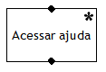

O que é?
O HTMaster é um aplicativo web para criação de Diagramas Hierárquicos de Metas e de Modelos de Tarefas.
O que é um Diagrama Hierárquico de Metas?
É uma estrutura que organiza um conjunto de metas, ou objetivos que os usuários terão ao utilizar o sistema. Por isso, permite uma visão macro das metas sendo que, para as metas definidas no último nível do Diagrama, deve-se associar um Modelo de Tarefas.
Que elementos compõem um Diagrama Hierárquico de Metas?
É Diagrama Hierárquico de Metas composto por metas, que são representadas por retângulos com bordas arredondadas contendo o nome da meta, definido sob o ponto de vista do usuário. As metas devem estar conectadas, ligadas, de acordo com algum critério que o projetista ache relevante. Ainda, cada meta é identificada por uma letra.
O que é um Modelo de Tarefas?
É uma estrutura que decompõe, hierarquicamente, os passos necessários para se atingir a meta associada, do ponto de vista do usuário. Desta forma, cada tarefa pode ter subtarefas, e assim sucessivamente. Um Modelo de tarefa indica os cenários que descrevem sua meta. Ainda, se houve a descrição de um Diagrama Hierárquico de Metas, a meta descrita no Modelo de tarefas deve ter o mesmo nome e identificação (letra).
Que elementos compõem um Modelo de Tarefas?
Um Modelo de Tarefas indica a meta e os cenários que a descrevem e a representação gráfica, hierárquica, das tarefas para a realização da meta. Ainda, textualmente, para cada tarefa, são representados os signos associados, os mecanismos de prevenção e tratamento de erro.
As tarefas são representadas por retângulos, que possuem marcações próprias de acordo com o tipo de estrutura que está associada. Pode-se ter estruturas sequenciais, independente de ordem, alternativas, iterativas e ubíquas. Além disso, uma tarefa pode ser representada como opcional ou como operador.
Em um Modelo de Tarefas, o que é uma tarefa do tipo operador e como é representada?
Um operador é quando uma tarefa não pode ser mais descrita porque seria mapeada diretamente por um elemento de interação na interface. Por isso, geralmente são consideradas tarefas mais simples. Graficamente, são representadas por uma linha abaixo do retângulo. Exemplo: Confirmar login, Informar senha, Imprimir formulário. No caso, quando a ação de imprimir for representada como operador significa que o sistema utilizará valores default e o usuário não poderá configurar parâmetros de impressão.
Em um Modelo de Tarefas, o que são estruturas sequenciais e como são representadas?
São aquelas que representam a ordem na qual as tarefas devem ser executadas. Graficamente, são representadas por retângulos contendo o nome da tarefa, e um número no canto superior esquerdo, que indica a ordem na qual ela será executada. Exemplo, para realizar login em um sistema, o usuário deve precisar informar código do usuário e depois informar senha, obrigatoriamente nesta ordem.
Em um Modelo de Tarefas, o que são estruturas independentes de ordem e como são representadas?
São aquelas que representam um conjunto de tarefas, e não uma sequência. Nesse tipo de estrutura, a ordem das tarefas é sugerida pelo designer, mas é decidida pelo usuário. Graficamente, são representadas por retângulos contendo o nome da tarefa e um número no canto superior esquerdo acompanhado de um ponto de interrogação, que indica a posição relativa na estrutura, que foi sugerida. De toda a forma, todas as tarefas são executadas, obrigatoriamente, pois a liberdade se aplica somente a ordem de execução das mesmas. Exemplo, para realizar login, o designer pode sugerir que, primeiro, seja fornecido o código do usuário e, depois, a senha. Mas quem decidirá essa ordem será o usuário.
Em um Modelo de Tarefas, o que são estruturas alternativas e como são representadas?
São aquelas em apresentam caminhos diferentes para se alcançar um objetivo. Nessa estrutura, o usuário possui duas ou mais tarefas, das quais uma será escolhida de acordo com a sequência necessária para atingir a meta. Graficamente, são representadas por retângulos contendo o nome da tarefa, letras no canto superior esquerdo como identificadores e um pequeno círculo no canto superior direito dentro do retângulo. Exemplo: para realizar login no sistema, o usuário pode fornecer seus dados de acesso ou buscar pela senha esquecida. Observe que as tarefas Informar dados e Buscar senha não são do tipo Operador porque ainda podem ser decompostas.
Em um Modelo de Tarefas, o que é uma tarefa iterativa e como é apresentada?
É aquela que pode ser executada diversas vezes. Graficamente, é representada por retângulos contendo o nome da tarefa e um asterisco no canto superior direito dentro do retângulo. Também é possível indicar o número mínimo e máximo de repetições por meio de um intervalo representado por [n...m] e o número mínimo de vezes que a tarefa deve ser realizada por [n+]. Exemplo, o usuário pode acessar diversas vezes a opção de ajuda do sistema.

Em um Modelo de Tarefas, o que é uma tarefa ubíqua e como é apresentada?
É aquela que pode ser executada qualquer momento. Graficamente, é representada por retângulos contendo o nome da tarefa e um círculo preenchido no canto superior direito dentro do retângulo. Exemplo: o usuário pode sair do sistema a qualquer momento.

Em um Modelo de Tarefas, o que é uma tarefa opcional e como é apresentada?
É aquela que o usuário pode optar por realizá-la ou não. Graficamente, é representada por retângulos com bordas tracejadas contendo o nome da tarefa. Exemplo: o usuário, ao consultar a opção de ajuda pode, não, desejar imprimir as informações.
Em um Modelo de Tarefas, o que é uma pré-condição e como é apresentada?
É a condição para que a meta ou tarefa seguinte seja executada. Graficamente, é representada por retângulos contendo uma linha lateral (esquerda ou direita) e o nome da pré-condição. Exemplo: o usuário precisar estar logado para poder alterar a sua senha.
No HTMaster, o que são os elementos da caixa de ferramentas?
As metas e tarefas são denominadas de elementos. Clicando com o botão direito sobre um elemento são mostradas as ações que podem ser aplicadas à meta ou à tarefa, conforme o tipo de elemento.
No HTMaster, como aplicar os diferentes tipos de estrutura de tarefa?
As estruturas sequenciais, independente de ordem e alternativas são definidas na tarefa pai (por meio da cardinalidade), que aplica as marcações do respectivo tipo às suas subtarefas. Já a definição de tarefa iterativa ou ubíqua é aplicada na própria tarefa. Em todos os casos, as opções de tipo de estrutura disponíveis são informadas por meio de um menu, que é disponibilizado quando o usuário clica com o botão direito do mouse sobre a meta ou uma tarefa.
No HTMaster, como escrever as letras que identificam cada meta de um Diagrama Hierárquico de Metas?
Descrições textuais no HTMaster devem ser incluídas por meio da caixa de texto, disponibilizada na barra de ferramentas da aplicação. Na descrição textual não podem ser utilizados os símbolos | e \.
No HTMaster, como indicar o intervalo de repetições de uma tarefa iterativa?
Descrições textuais no HTMaster devem ser incluídas por meio da caixa de texto, disponibilizada na barra de ferramentas da aplicação. Na descrição textual não podem ser utilizados os símbolos | e \.
No HTMaster, como incluir informações relacionadas à prevenção e tratamento de erro quando desejado em um Modelo de Tarefas?
Descrições textuais no HTMaster devem ser incluídas por meio da caixa de texto, disponibilizada na barra de ferramentas da aplicação. Na descrição textual não podem ser utilizados os símbolos | e \.
No HTMaster, como alterar as configurações de texto?
Não é possível alterar o tipo, tamanho ou cor de letra das caixas de texto.
No HTMaster, é possível configurar as ligações entre as metas e ou entre as tarefas?
Não é possível alterar largura ou tipo de linha que conecta as metas e ou as tarefas.
No HTMaster, é possível alterar a direção de uma pré-condição?
Sim, para isso deve-se clicar com o botão direito do mouse sobre a pré-condição, meta ou tarefa escolher “Pré-condição (L)” para ligação à esquerda ou “Pré-condição (R)” para ligação à direita.
No HTMaster é possível validar um Diagrama Hierárquico de Metas?
Sim, através da opção “Validar” no menu superior, após a validação os resultados são apresentados na área à esquerda “Validação”.
No HTMaster é possível validar um Modelo de Tarefas?
Sim, da mesma forma como é feita a validação de um Diagrama Hierárquico de Metas.
No HTMaster, como ligar os elementos?
Basta clicar com o botão esquerdo do mouse na porta de saída de um elemento (bolinha preta localizada abaixo ou ao lado dos elementos) e arrastar até a porta de entrada de outro elemento (bolinha preta localizada acima do elemento).
No HTMaster, é possível alterar a ligação entre os elementos?
Sim, é possível removê-las e refazer a ligação para outro elemento.
No HTMaster, é possível alterar o tipo de estrutura de tarefas?
Sim, para isso deve-se clicar com o botão direito sobre a meta ou tarefa pai e escolher qual a opção do menu desejado (cardinalidade). Para isso, as ligações já devem ter sido criadas.
No HTMaster, como definir o tipo de estrutura de tarefas (cardinalidade)?
Após definido os elementos (metas e tarefas), deve-se fazer as ligações e, somente, depois definir o tipo de estrutura desejada.